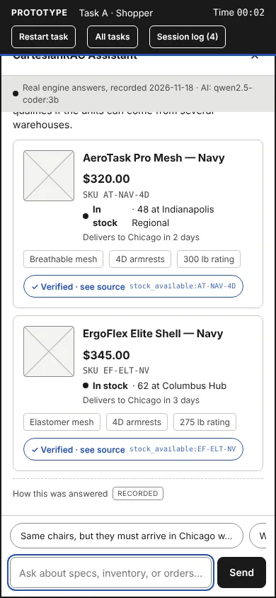
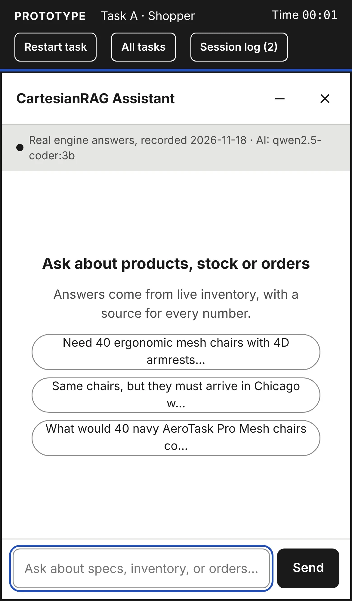
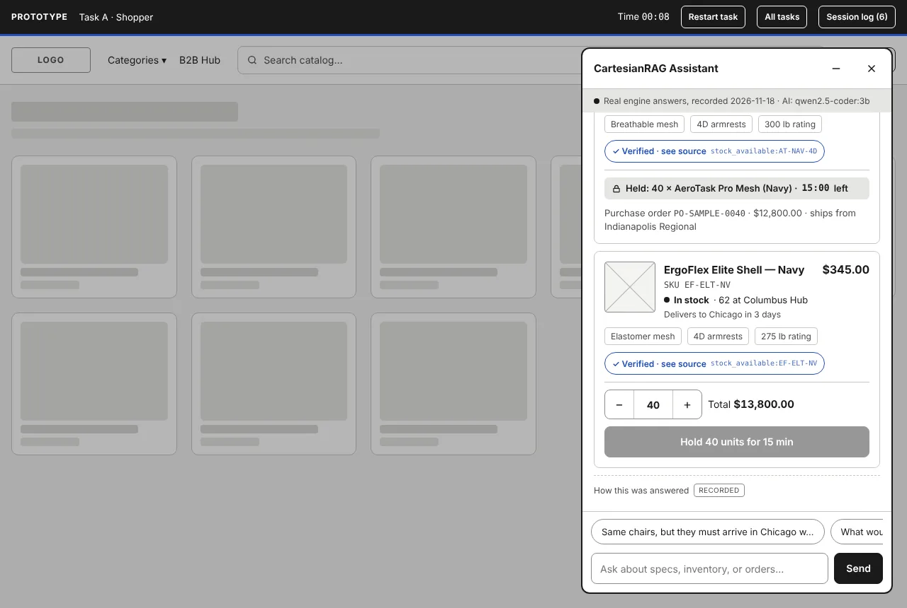

Evaluation.
Three kinds of evidence, each labelled: a simulated usability round, an expert review against Nielsen’s heuristics, and the engine’s own measurements. Sessions with real people are still to come.
Ten synthetic participants, findings kept as hypotheses.
Five synthetic shoppers and five synthetic support agents were walked through the first prototype, using the personas and known interaction patterns. No real people took part. Their predicted times and scores were dropped; the findings were kept as hypotheses, and several were later confirmed by the expert review.
| # | Predicted problem | Status |
|---|---|---|
| F1 | Shoppers don’t see the citation badge as clickable | Fixed — “✓ Verified · see source” |
| F2 | “Reserve stock & create PO” sounds like a charge | Fixed — “Hold 40 chairs for 15 min” + “No charge until your purchase order is approved” |
| F3 | Agents can send a promise without the action | Open (console not connected yet) |
| F4 | Recommendations don’t explain why | Open |
| F6 | The 15‑minute countdown causes anxiety | Fixed — says what happens at zero |
Twelve findings against Nielsen’s heuristics. All fixed.
Major (fix before testing)
Minor (fix soon)
Cosmetic
About wrong data
| # | Problem | Severity | Fix | Status |
|---|---|---|---|---|
| R1 | Engine-built cards had no quantity or Reserve, so Task A couldn't be finished | 3 | Stepper + “Hold 40 chairs for 15 min”, pre‑filled from the request | Fixed |
| R2 | On a phone, the test bar covered the assistant's close button | 3 | Assistant starts below the bar's measured height | Fixed |
| R3 | The waiting state didn't match the real 6–40 s wait | 3 | Real steps, timer, honest range; demo replays real timings at 4× | Fixed |
| R4 | Follow‑up requirements carried forward invisibly | 2 | Removable requirement chips; engine takes drop | Fixed |
| R5 | “1 option would match” hint wasn't tappable | 2 | One button per way out; engine sends relax | Fixed |
| R6 | “Available: 48” didn't say 48 of what, where | 2 | Big number + sentence; engine sends subject | Fixed |
| R7 | Colour chips looked tappable but did nothing | 2 | Plain text: “Also in Grey, Navy” | Fixed |
| R8 | Engine words on the shopper's screen | 2 | Shopper words; table and model names moved to Engine details | Fixed |
| R9 | Hand‑off message shown twice | 1 | Shown once | Fixed |
| R10 | Engine panel under every answer | 1 | One “Engine details” switch | Fixed |
| R11 | Suggestions cut off with “…” | 1 | Full text, wrapping; one on phones | Fixed |
| R12 | “Live inventory” claim in recorded mode | 1 | “Real answers, recorded 19 Nov 2026, replayed for this demo” | Fixed |
Limit: Nielsen recommends 3 to 5 reviewers. This review had one, an AI assistant. It finds likely problems; it doesn’t replace watching people.
Three major problems, fixed and checked in a browser.



What these pages can’t claim.
No real participants
Next: 2–3 informal Task A sessions, one on a phone, logged against the review findings.
Marcus’s half
The operations console is still hand‑built, not connected to the engine.
One PC, a few days
The same questions ran 2× faster on one day than the day before. Speed claims need more runs.